Moon has been bright recently, and many clouds over Tekapo. Here is a collection of pink clouds over the weeks
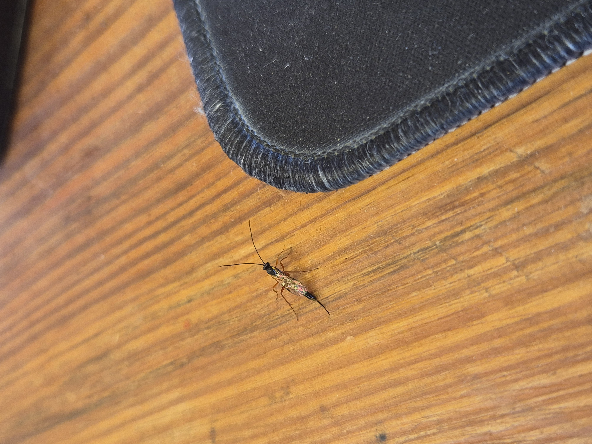
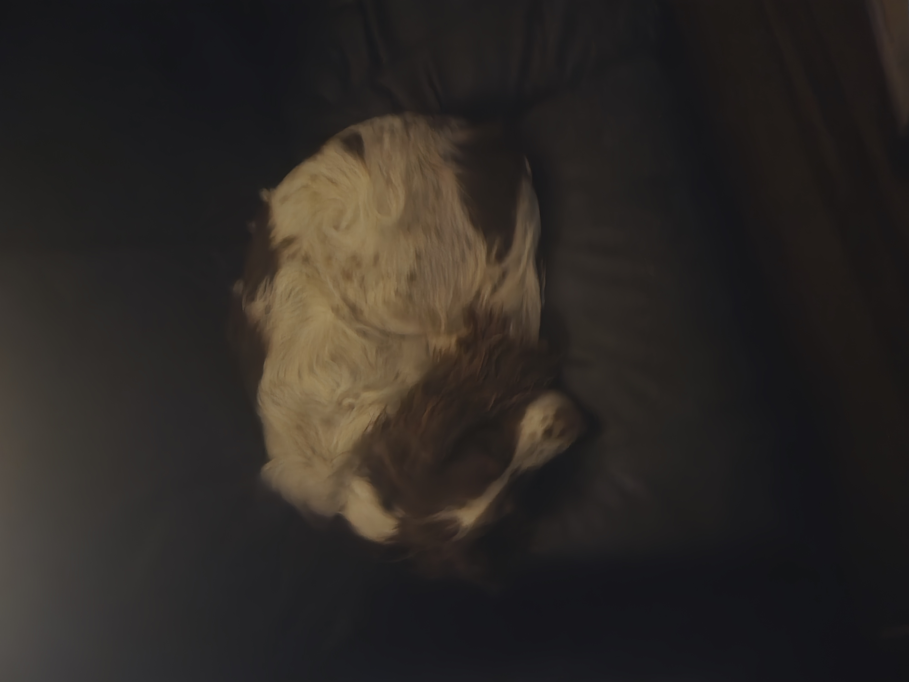
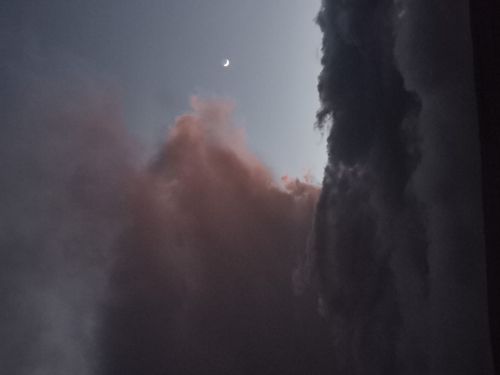
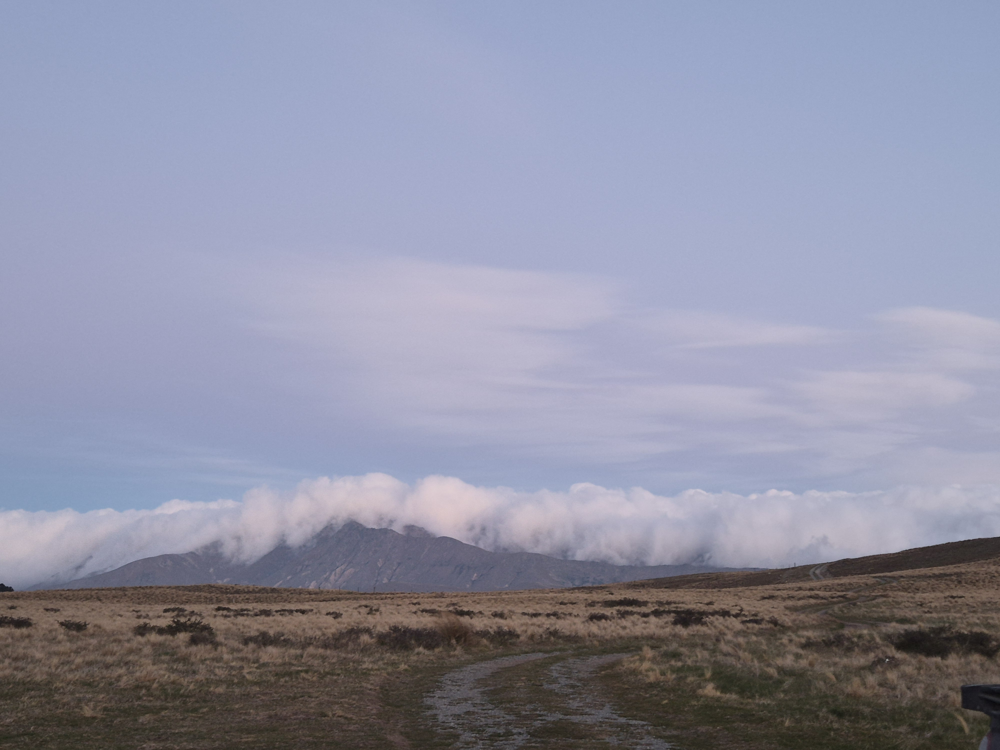
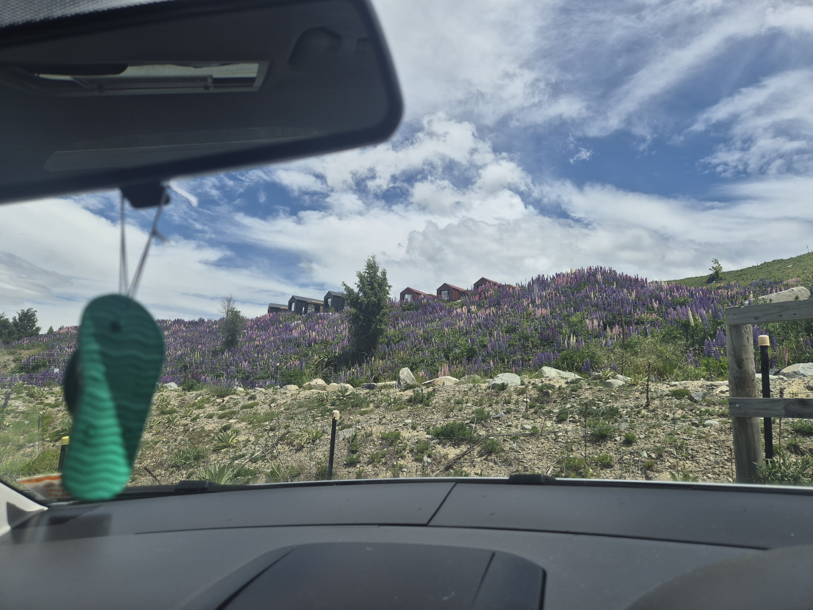
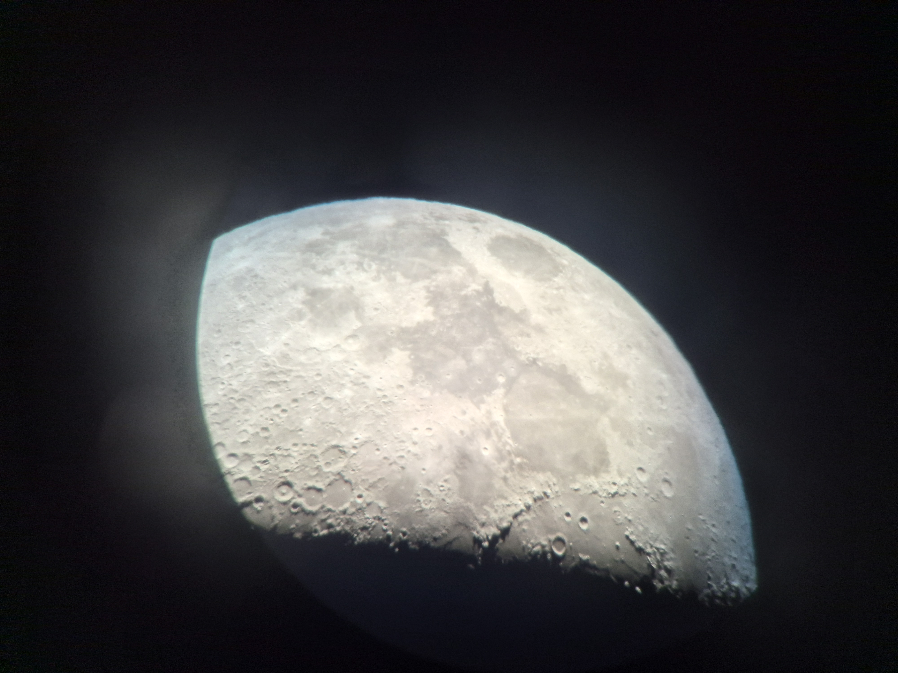
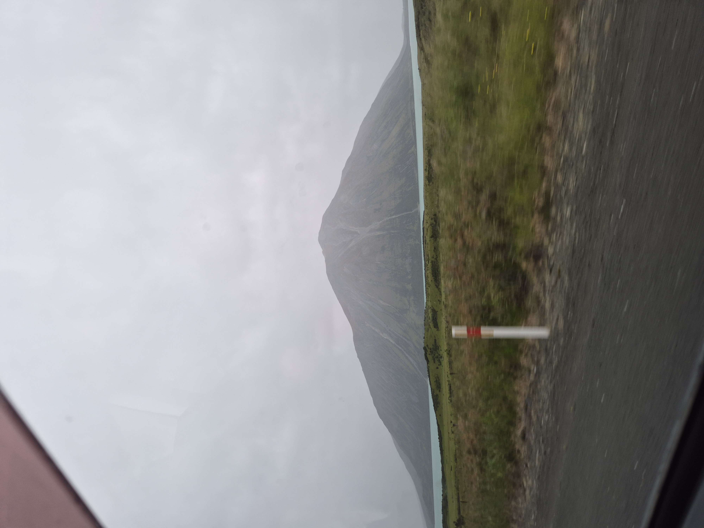
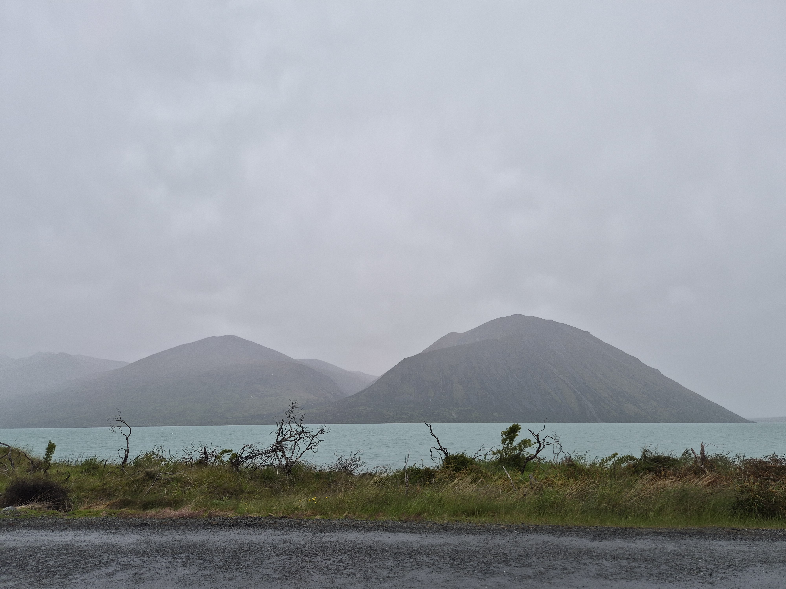
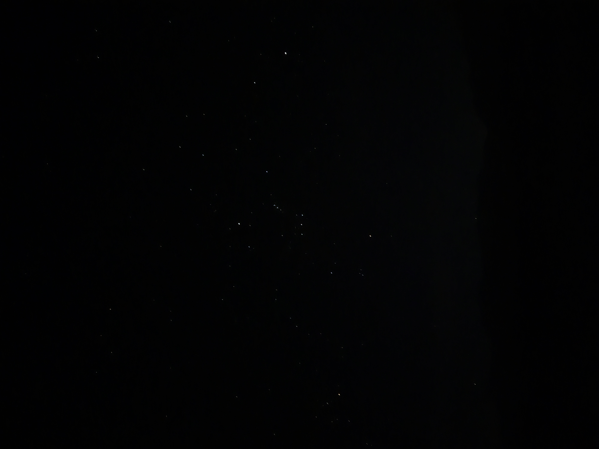
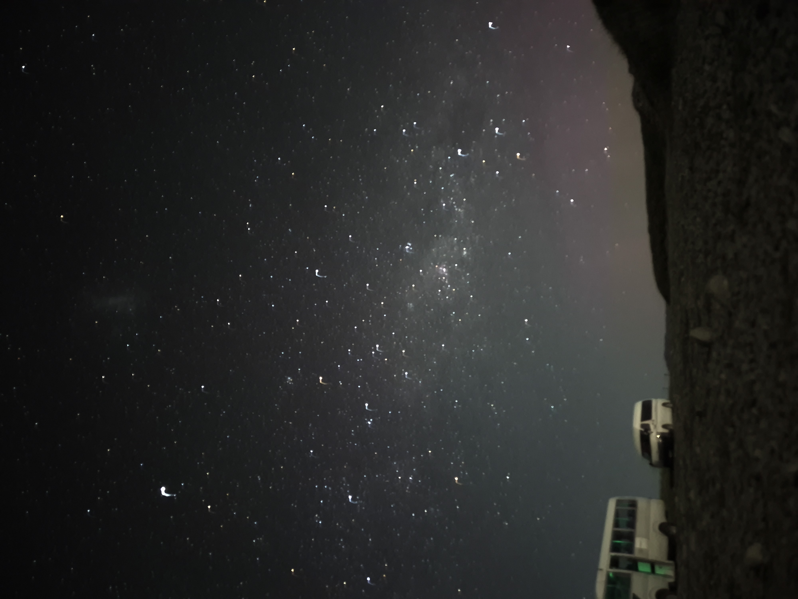
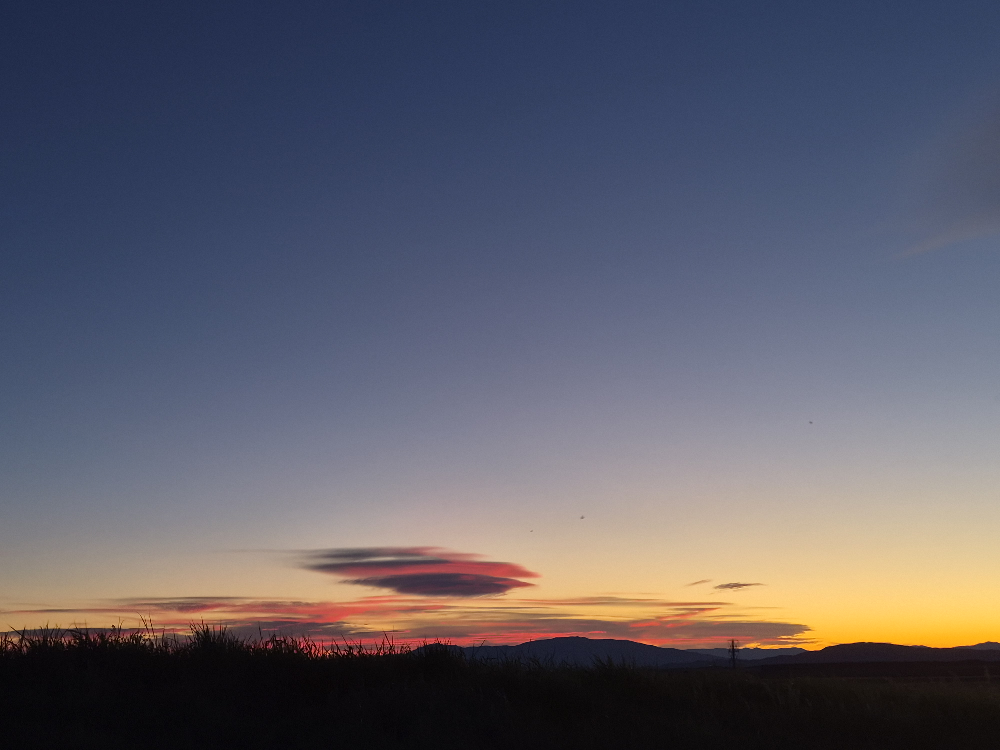
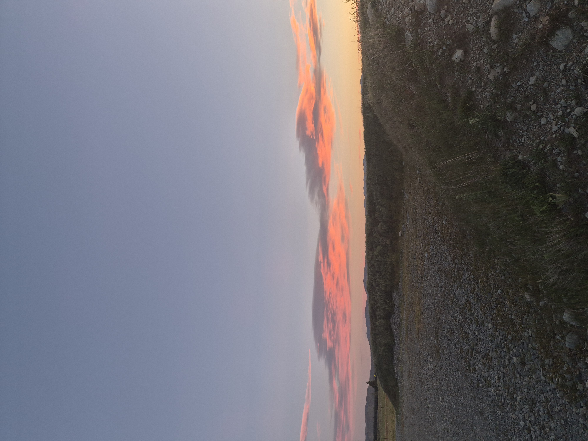
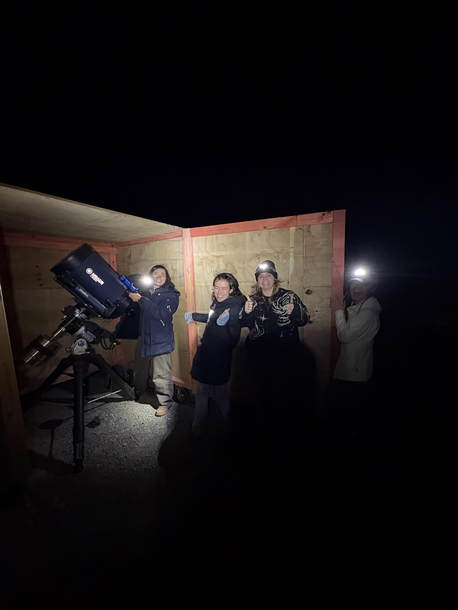
Got some good night time pictures on my phone also. The moon through the telescope is very cool - if you look very closely you may be able to see an American flag. The photo of the milky way is about a 30 second exposure, sorry about the blur it was very windy, and you can see the southern lights in the bottom right corner. The picture of orion is a shorter exposure, if the picture looks black then turn up your brigthness to max.
Many clouds around at the moment, when they fall over the mountains like this it usually means it will be a clear night!
Went on a walk by the lupins, many many of them around the next couple months so lots of people taking photos. They are gorgeous but there are lots, my favourite are the pink ones (They come in many shades of pink and purple). I then went on a long drive to lake Ohau, and did a swim there. There was no one around which made me feel better as I did not look very elegant getting in and oout of the water. Final photos is of this sweet dog sat in a ball, this bug that was sat in the office, and some lovely ladies and a telescope.